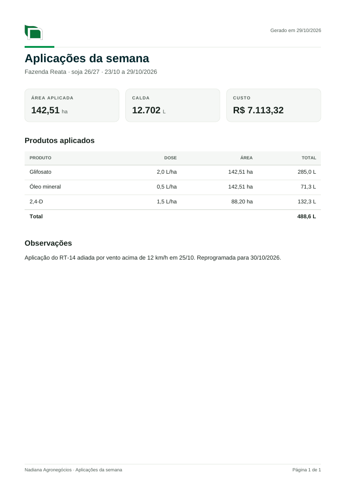

Marca
Cabeçalho dos apps: claro, com o símbolo, que funciona sem placa em fundo claro e escuro. O verde fica para o que se toca. O logo vertical, com o nome, vai na capa, na tela inicial e na navegação lateral; em fundo escuro, sempre na placa branca:
Aplicações da safra
Fazenda Reata, soja 26/27
Cores
Marca
Interface
Status do calendário
Gráficos (novo)
Sombras (novo)
Cartões e cabeçalho
Ao passar o mouse, menus
Folha, janela, aviso rápido
Textos
Números
Botões
No celular, a ação principal da tela pode ficar no botão flutuante .nd-fab (canto de baixo, acima da navegação).
Abas, seletor e filtros
Formulário
Situação e mensagens
Lista e tabela
| Produto | Dose | Área | Total |
|---|---|---|---|
| Glifosato | 2,0 L/ha | 142,51 ha | 285,0 L |
| Óleo mineral | 0,5 L/ha | 142,51 ha | 71,3 L |
| 2,4-D | 1,5 L/ha | 88,20 ha | 132,3 L |
| Total | 488,6 L |
Vazio e carregando
Nenhuma aplicação programada
Programe a primeira aplicação do talhão para ela aparecer no calendário.
Ícones (Lucide)
Use com <svg class="nd-ic"><use href="#i-tractor"/></svg>. Para acrescentar um, veja gerar_icones.py.
Gráficos
Até 4 séries, sempre na ordem graf-1 a graf-4; o resto vai em “Outros”. Série única não leva legenda: o título diz o que é.
Consumo por produto
litros · safra 26/27Área aplicada por semana
haCalda por talhão
L · convencional × WEED-ITRelatório em PDF
Cabeçalho com o logo e a data, título em petróleo, números em destaque, tabela com total e rodapé com página. Só tema claro.

Funciona com a página servida (GitHub Pages ou servidor local), não abrindo o arquivo direto do disco.